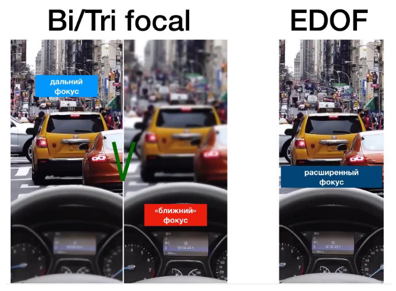
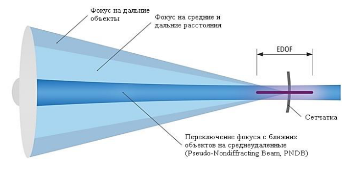

ИОЛ с расширенной глубиной фокуса позволяет получать изображения в непрерывном диапазоне зрения. Технологии EDOF представляют собой область новых разработок в офтальмологии.
Данная технология обладает немаловажными плюсами в сравнении с многофокусными ИОЛ, к ним относятся повышение контрастной чувствительности, плавный переход в отсутствие границ между отдельными фокусами, непрерывность.

Иллюстрация отличия воспринимаемого изображения с ИОЛ
с несколькими фокусами и ИОЛ с расширенной глубиной резкости
Конструкция EDOF-линз обладает следующими достоинствами по сравнению с мультифокальными линзами:
Недостатки EDOF обычно связаны с меньшей остротой зрения на близких расстояниях (до 40-45 см) и высокой стоимостью хрусталиков (что больше относится к «чистым» EDOF).
Следующим логичным шагом в улучшении функциональности зрения стала разработка ИОЛ с сохранением плюсов EDOF-линз с улучшением зрения вблизи. Один из таких примеров – ИОЛ EDEN (Swiss Advanced Vision, 2017, Швейцария).
Для увеличения глубины фокуса, что позволяет видеть на близком расстоянии, применяется технология мгновенной псевдоаккомодации Instant Focus – уникальная запатентованная технология, которая заменяет естественную аккомодацию хрусталика. Высокоточный асферический элемент, расположенный в центре оптической части, создает плавный переход фокуса от ближнего расстояния к среднему, за счет чего формируется непрерывное восприятие без неблагоприятных оптических эффектов. Эта технология позволяет увеличить глубину фокуса, характеризующуюся постоянным разрешением и пиковой интенсивностью света. Этот пик света достигается за счет создания концепции конструктивной интерференции световых волн асферической поверхностью в центре линзы. Полученный пучок света называется псевдо-недифрагирующийся пучок. В результате интерференции световых волн формируется постоянная четкость и сила светового потока на сетчатке.
В дополнение к асферическому элементу дифракционная зона обеспечивает зрение в ближнем и дальнем диапазонах, рефракционная зона обеспечивает зрение в дальнем диапазоне. В темное время суток зрение вдаль улучшается, за счет увеличения диаметра зрачка и открытия рефракционной зоны. Дифракционный луч начинает расходиться от фокальной точки, тогда как псевдо-недифрагирующийся пучок начинает расходиться через некоторое расстояние.
